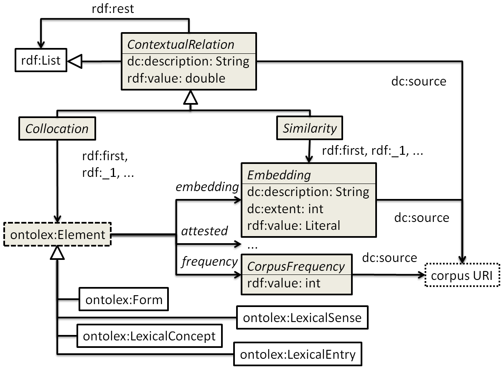

This document describes the module for frequency, attestation and corpus information of the Lexicon Model for Ontologies (lemon) as a result of the work of the Ontology Lexica community group (OntoLex). The module is targeted at complementing dictionaries and other linguistic resources containing lexicographic data with a vocabulary to express
corpus-derived statistics (frequency and cooccurrence information, collocations),
pointers from lexical resources to corpora and other collections of text (attestations),
the annotation of corpora and other language resources with lexical information (lemmatization against a dictionary), and
distributional semantics (collocation vectors, word embeddings, sense embeddings, concept embeddings).
The module tackles use cases in corpus-based lexicography, corpus linguistics and natural language processing, and operates in combination with the lemon core module, referred to as OntoLex, as well as with other lemon modules.
This document is a working draft for a module for frequency, attestation and corpus data of the OntoLex specifications.
It is not a W3C Standard nor is it on the W3C Standards Track.
There are a number of ways that one may participate in the development of this report:
More information about meetings of the ONTOLEX group can be obtained
here
Source code
for this document can be found on Github.
Disclaimer: This draft follows closely the structure and design of The Ontolex Lexicography Module. Draft Community Group Report 28 October 2018, edited by Julia Bosque-Gil and Jorge Gracia. In particular, motivational and introductory text are partially adapted without being marked as quotes. This is to be replaced by original text before publication.
Introduction
Background and Motivation
The lemon model provides a core vocabulary (OntoLex) to represent linguistic information associated to ontology and vocabulary elements. The model follows the principle of semantics by reference in the sense that the semantics of a lexical entry is expressed by reference to an individual, class or property defined in an ontology.
The current version of lemon (as an outcome of the OntoLex group, sometimes referred as OntoLex-lemon in the literature) as well as its previous version (lemon [1]) have been increasingly used in the context of dictionaries and lexicographical data to convert existent lexicographic information into the standards and formats of the Semantic Web. In consequence, a designated lemonmodule for lexicography (lexicog) has been designed, with applications in monolingual [2], bilingual [3], and multilingual [4] dictionaries, as well as diachronic [5], dialectal [6], and etymological ones [7], among others.
This module is partially motivated by requirements of corpus-based lexicography (frequency and collocation information) and digital philology (linking lexical resources with corpus data).
A second motivation for a lemon model for corpus-based information comes from natural language processing. With the rise of distributional semantics since the early 1990s, lexical semantics have been complemented by corpus-based co-occurrence statistics (KEYNESS-REFERENCE???), collocation vectors (Schütze 1993), word embeddings (Collobert et al. 2012) and sense embeddings (??? and Schütze, 2017). With the proposed module, lemon can serve as a community standard to encode, store and exchange vector representations (embeddings) along with the lexical concepts, senses, lemmas or words that they represent. The processing of word embeddings is beyond the scope of this module. Embeddings are thus represented as literals ("BLOB").
The added value of using linked data technologies to represent such information is an increased level of interoperability and integration between different types of lexical resources, the textual data they pertain to, as well as distributional representations of words, lexical senses and lexical concepts. Creating a lemon module in the OntoLex CG is a suitable means for establishing a vocabulary on a broad consensus that takes into account all use cases identified above in an adequate fashion.
The OntoLex community is the natural forum to accomplish this for several reasons:
The extended use of lemon to support digital lexicography,
the improved application and applicabiltiy of lemon in natural language processing,
the coming together of the lexicography, AI and human language technology communities, resp. resources, and
the possibility of reusing already available mechanisms in lemon, preventing researchers from "re-inventing the wheel",
Aim and Scope
The goal of this module is to complement lemon core elements with a vocabulary layer to represent lexicographical and semantic information derived from or defined with reference to corpora in a way that (a) generalizes over use cases from digital lexicography, natural language processing, artificial intelligence, computational philology and corpus linguistics, that (b) facilitates exchange, storage and re-usability of such data along with lexical information,
and that (c) minimizes information loss.
The scope of the model is three-fold:
extending the OntoLex-lexicog model with corpus information to support existing challenges in corpus-driven lexicography,
modelling existing lexical and distributional-semantic resources (corpus-based dictionaries, collocation dictionaries, embeddings) as linked data, to allow their conjoint publication and inter-operation by Semantic Web standards, and
providing a conceptual / abstract model of relevant concepts in distributional semantics that facilitates building linked data-based applications that consume and combine both lexical and distributional information.
Corpus as used throughout this document is understood in its traditional, broader sense as a structured data collection -- or material suitable for being included into such a collection.
We do not intend to limit the use of the term to corpora in a linguistic or NLP sense. Language resources of any kind (web documents, dictionaries, plain text, unannotated corpora, etc.) are considered "corpus data" and a collection of such information as a "corpus" in this sense. Any information drawn from or pertaining to such information is considered "corpus-based".
Namespaces
This is a list of relevant namespaces that will be used in the rest of this document:
OntoLex module for frequency, attestation and corpus information
We consider all lemon core concepts as being countable, annotatable/attestable and suitable for a numerical representation by means of a vector (embedding). For this reason, we define the rdfs:domain of all properties that link lexical and corpus information by means of ontolex:Element, an abstract superclass of
ontolex:Form (for word frequency and plain word/phrase embeddings),
ontolex:LexicalEntry (for lemma frequency and lemma-based word/phrase embeddings),
ontolex:LexicalSense (for sense frequency and sense embeddings), and
ontolex:LexicalConcept (for concept frequency and concept embeddings).
ontolex:Element as a superclass of ontolex:LexicalEntry, ontolex:Form, ontolex:LexicalSense and ontolex:LexicalConcept
Such a top-level concept used to exist in Monnet-lemon, but has been abandoned in the 2016 edition of lemon.
If this concept is not provided by a future revision of the lemon core vocabulary, it will be introduced by this module.
Note that the introduction of ontolex:Element has no effect on lemon core other that facilitating vocabulary organization, as ontolex:Element is not to be used for data modeling.
Overview
The following diagram depicts the OntoLex module for frequency, attestation and corpus information (fraq). Boxes represent classes of the model. Arrows with filled heads represent object properties. Arrows with empty heads represent rdfs:subClassOf.
Vocabulary elements introduced by this module are shaded grey (classes) or set in italics.
Module for Frequency, Attestation and Corpus Information (frac), overview
TODO: add attestation component from Fahad and Katrien
DISCUSSION:
Looks more complicated than it is. Shall we drop inferrable information ? (rdf:rest, rdf:first are available vocabulary elements because ContextualRelation is a subclass of rdf:List, subclasses of ontolex:Element should be dropped once ontolex:Element is introduced.)
Definitions
Frequency
Frequency information is a crucial component in human language technology. Corpus-based lexicography originates with Francis and Kucera (1958), and subsequently, the analysis of frequency distributions of word forms, lemmas and other linguistic elements has become a standard technique in lexicography and philology, and given rise to the field of corpus linguistics.
At its core, this means that lexicographers use corpus frequency and distribution information while compiling lexical entries (also see the section on collocations and similarity below).
As a qualitative assessment, frequency can be expressed with lexinfo:frequency, "[t]he relative commonness with which a term occurs". However, this is an object property with possible values lexinfo:commonlyUsed, lexinfo:infrequentlyUsed, lexinfo:rarelyUsed, while absolute counts over a particular resource (corpus) require novel vocabulary elements.
Absolute frequencies are used in computational lexicography (e.g., the Electronic Penn Sumerian Dictionary), and they are an essential piece of information for NLP and corpus linguistics.
In order to avoid confusion with lexinfo:Frequency, this is defined with reference to a particular dataset, a corpus.
Corpus frequency provides the absolute number of attestations (rdf:value) of a particular ontolex:Element (see frac:frequency) in a particular language resource (dct:source).
The following example illustrates word and form frequencies for the Sumerian word a (n.) "water" from the Electronic Penn Sumerian Dictionary and the frequencies of the underlying corpus.
# word frequency, over all form variants
epsd:a_water_n a ontolex:LexicalEntry;
frac:frequency [
a frac:CorpusFrequency;
rdf:value "4683"^^xsd:int;
dct:source <http://oracc.museum.upenn.edu/epsd2/pager> ] .
# form frequency for individual orthographical variants
epsd:a_water_n ontolex:canonicalForm [
ontolex:writtenRep "𒀀"@sux-Xsux, "a"@sux-Latn;
frac:frequency [
a frac:CorpusFrequency;
rdf:value "4656"^^xsd:int;
dct:source <http://oracc.museum.upenn.edu/epsd2/pager> ] ] .
epsd:a_water_n ontolex:otherForm [
ontolex:writtenRep "𒀉"@sux-Xsux, "a2"@sux-Latn;
frac:frequency [
a frac:CorpusFrequency;
rdf:value "1"^^xsd:int;
dct:source <http://oracc.museum.upenn.edu/epsd2/pager> ] ] .
epsd:a_water_n ontolex:otherForm [
ontolex:writtenRep "𒂊"@sux-Xsux, "e"@sux-Latn;
frac:frequency [
a frac:CorpusFrequency;
rdf:value "24"^^xsd:int;
dct:source <http://oracc.museum.upenn.edu/epsd2/pager> ] ].
The example shows orthographic variation (in the original writing system, Sumerian Cuneiform sux-Xsux, and its Latin transcription sux-Latn). It is slightly simplified insofar as the ePSD2 provides individual counts for different periods and that only three of six orthographical variants are given. Note that these are orthographical variants, not morphological variants (which are not given in the dictionary).
It is necessary to provide the link to the underlying corpus for every frequency assessment because the same element may receive different counts over different corpora. For data modelling, it is recommended to define a corpus- or collection-specific subclass of frac:CorpusFrequency with a fixed dct:source value. This leads to more compact data and avoids potential difficulties with the Open World Assumption (interpretability of incomplete data).
# Corpus Frequency in the EPSD corpus
:EPSDFrequency rdfs:subClassOf frac:CorpusFrequency.
:EPSDFrequency rdfs:subClassOf
[ a owl:Restriction ;
owl:onProperty dct:source ;
owl:hasValue <http://oracc.museum.upenn.edu/epsd2/pager> ] .
# frequency assessment
epsd:a_water_n frac:frequency [
a :EPSDFrequency;
rdf:value "4683"^^xsd:int ].
frac:CorpusFrequency can be extended with additional filter conditions to define sub-corpora. For example, we can restrict the subcorpus to a particular time period, e.g., the Neo-Sumerian Ur III period:
# EPSD frequency for the Ur-III period (aat:300019910)
:EPSDFrequency_UrIII rdfs:subClassOf :EPSDFrequency;
:EPSDFrequency rdfs:subClassOf
[ a owl:Restriction ;
owl:onProperty dct:temporal ;
owl:hasValue aat:300019910 ] .
# frequency assessment for sub-corpus
epsd:a_water_n frac:frequency [
a :EPSDFrequency_UrIII;
rdf:value "2299"^^xsd:int ].
Attestation
input from Katrien, Fahad, and Jesse
Usage guidelines
TBC
Acknowledgements
TBC
References
from lexicog, to be updated
[1]
J. McCrae, G. Aguado-de Cea, P. Buitelaar, P. Cimiano, T. Declerck, A. Gómez-Pérez, J. Gracia, L. Hollink, E. Montiel-Ponsoda, D. Spohr, and T. Wunner, "Interchanging lexical resources on the Semantic Web" . Language Resources and Evaluation, vol. 46, 2012.
[2]
B. Klimek and M. Brümmer, "Enhancing lexicography with semantic language databases" Kernerman Dictionary News, 23, 5-10. 2015.
[3]
J. Gracia, M. Villegas, A. Gómez-Pérez, and N. Bel, "The apertium bilingual dictionaries on the web of data" Semantic Web Journal, vol. 9, no. 2, pp. 231-240, Jan. 2018.
[4]
J. Bosque-Gil, J. Gracia, E. Montiel-Ponsoda, and G. Aguado-de Cea, "Modelling multilingual lexicographic resources for the web of data: the k dictionaries case" in Proc. of GLOBALEX'16 workshop at LREC'15, Portoroz, Slovenia, May 2016.
[5]
F. Khan, J. E. Díaz-Vera, and M. Monachini, "Representing Polysemy and Diachronic Lexico-Semantic Data on the Semantic Web" In SWASH at ESWC (2016)
[6]
T. Declerck and E. Wandl-Vogt, "Cross-linking Austrian dialectal Dictionaries through formalized Meanings" In Proceedings of the XVI EURALEX International
Congress, pp. 329–343. 2014.
[7]
F. Abromeit, C. Chiarcos, C. Fäth and M. Ionov, "Linking the Tower of Babel: Modelling a Massive Set of Etymological Dictionaries as RDF" In LDL 2016 5th Workshop on Linked Data in Linguistics: Managing, Building and Using Linked Language Resources (p. 11). May 2016.
[8]
J. Bosque-Gil, J. Gracia, and A. Gómez-Pérez, "Linked data in lexicography" Kernerman Dictionary News, pp. 19-24, Jul. 2016.
[9]
T. Declerck, E. Wandl-Vogt, and K. Mörth, "Towards a Pan European Lexicography by Means of Linked (Open) Data" In Electronic lexicography in the 21st century: linking lexical data in the digital age. Proceedings of the eLex 2015 conference (pp. 342-355), 2015.
[10]
J. Bosque-Gil, J. Gracia, and E. Montiel-Ponsoda, "Towards a module for lexicography in OntoLex" in Proc. of the LDK workshops: OntoLex, TIAD and Challenges for Wordnets at 1st Language Data and Knowledge conference (LDK 2017), Galway, Ireland, vol. 1899. CEUR-WS, pp. 74-84, Jun 2017.
[11]
A. Parvizi, M. Kohl, M. González, R. Saurí, "Towards a Linguistic Ontology with an Emphasis on Reasoning and Knowledge Reuse" Language Resources and Evaluation Conference (LREC), May 2016.
[12]
J. Gracia, I. Kernerman, and J. Bosque-Gil, "Toward linked data-native dictionaries" in. Proc. of eLex 2017 conference (Electronic lexicography in the 21st century), in Leiden, Netherlands. Lexical Computing CZ s.r.o., pp. 550-559, Sep. 2017.
[13]
S. Stolk, "OntoLex and Onomasiological Ordering: Supporting Topical Thesauri" in Proc. of the LDK2017 Workshops, NUI Galway, Ireland, 18 June (pp. 60–67), 2017.
[14]
I. El Maarouf, J. Bradbury, and P. Hanks, "PDEV-lemon: a Linked Data implementation of the Pattern Dictionary of English Verbs based on the Lemon model". In 3rd Workshop on Linked Data in Linguistics: Multilingual Knowledge Resources and Natural Language Processing (p. 88). 2014.
[15]
F. Khan and F. Boschetti, "Towards a Representation of Citations in Linked Data Lexical Resources" In proc. of the XVIII EURALEX International Congress (EURALEX 2018). 2018
[16]
animal. American Heritage Dictionary. Houghton Mifflin Harcourt, 1994. Last accessed 28.10.18.
[17]
blanco. Diccionario de la Lengua Española (DLE). Versión electrónica de la 23. Edición. December 2017. Last accessed 28.10.18.
[18]
air. Oxford English Living Dictionaries Online. Last accessed 01.11.18. https://en.oxforddictionaries.com/definition/air

The property frequency assigns a particular ontolex:Element a frac:CorpusFrequency.